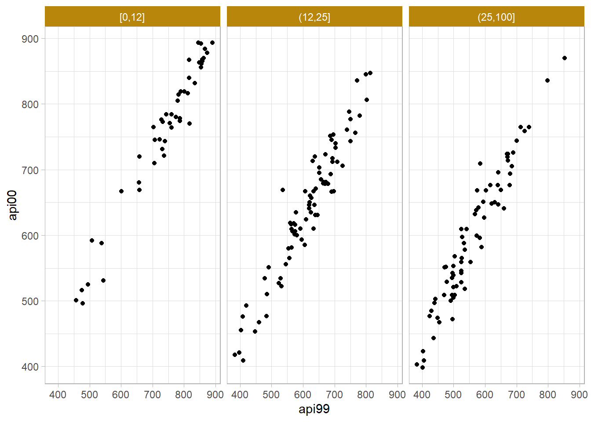

library(tidyverse)
library(scales)
library(janitor)
library(survey)
library(srvyr)
library(gtsummary)7 Modeling
A one-way ANOVA is equivalent to a linear model with a single categorical variable. A two-sample t-test is equivalent to an ANOVA with a two-level categorical predictor.
7.1 ANOVA
ANOVA tests whether the mean outcome is the same across groups. It is equivalent to the linear model. A full explanation of ANOVA is here, but with survey analysis, the equal variances assumption does not apply because of the weighting.
apistrat |>
ggplot(aes(x = hsg_cut, y = api00)) +
geom_boxplot()svyglm(
api00 ~ hsg_cut,
design = apistrat_des
) |>
gtsummary::tbl_regression(intercept = TRUE)Characteristic |
Beta |
95% CI 1 |
p-value |
|---|---|---|---|
| (Intercept) | 759 | 722, 795 | <0.001 |
| hsg_cut | |||
| [0,12] | — | — | |
| (12,25] | -100 | -145, -56 | <0.001 |
| (25,100] | -154 | -198, -109 | <0.001 |
| 1
CI = Confidence Interval |
|||
7.2 Linear Regression
apistrat |>
ggplot(aes(x = api99, y = api00)) +
geom_point() +
facet_wrap(vars(hsg_cut))
svyglm(
api00 ~ api99 + hsg_cut,
design = apistrat_des
) |>
gtsummary::tbl_regression(intercept = TRUE)Characteristic |
Beta |
95% CI 1 |
p-value |
|---|---|---|---|
| (Intercept) | 62 | 35, 90 | <0.001 |
| api99 | 0.95 | 0.91, 0.98 | <0.001 |
| hsg_cut | |||
| [0,12] | — | — | |
| (12,25] | 2.7 | -8.2, 14 | 0.6 |
| (25,100] | 7.1 | -4.4, 19 | 0.2 |
| 1
CI = Confidence Interval |
|||
7.3 Logistic Regression
apistrat_des |>
summarize(
.by = meals_cut,
met_pct = survey_mean(
sch.wide == "Yes", na.rm = TRUE, proportion = TRUE, vartype = "ci"
)
) |>
ggplot(aes(x = meals_cut, y = met_pct)) +
geom_col(width = .4) +
geom_errorbar(aes(ymin = met_pct_low, ymax = met_pct_upp), width = .1)svyglm(
sch.wide ~ api99 + meals_cut,
design = apistrat_des,
family = quasibinomial
) |>
gtsummary::tbl_regression(intercept = TRUE) |>
as_gt() |>
gt::tab_caption("Logistic regression of meeting school-wide target by API in 1999.")Characteristic |
log(OR) 1 |
95% CI 1 |
p-value |
|---|---|---|---|
| (Intercept) | -3.4 | -7.3, 0.41 | 0.080 |
| api99 | 0.01 | 0.00, 0.01 | 0.013 |
| meals_cut | |||
| [0,12] | — | — | |
| (12,25] | 0.87 | -0.49, 2.2 | 0.2 |
| (25,100] | 1.8 | 0.13, 3.4 | 0.034 |
| 1
OR = Odds Ratio, CI = Confidence Interval |
|||